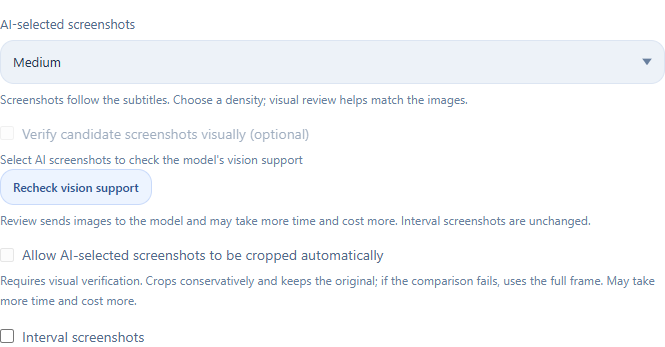

Original demonstration lesson, English Agent-written notes. Real app screens captured in a separate demo workspace. Scroll transitions are part of this website.
FROM WATCHING TO UNDERSTANDING
A useful note starts with the source.
One workspace for preparing media, shaping notes, and keeping a route back to the original explanation.
VIDEO / AUDIOTRANSCRIPT + AIYOUR NOTES
01
Bring the material
Paste a YouTube, Bilibili, or Douyin link, or import local video and audio. Use suitable original-language subtitles first, with local speech recognition when needed.
Links + local media02
Choose how to learn
Pick detailed notes, a key summary, a study guide, a step-by-step tutorial, or meeting minutes. Adjust text detail, note language, and timestamps.
Your structure + your instructions03
Keep it useful
Review the notes alongside the transcript, revisit timestamps, and export. Reopen history or reuse existing materials when you want a different result.
Review + revisit + export
Online platform access depends on your network, sign-in requirements, and platform rules.
AI ILLUSTRATIONS
The right frame, beside the right idea.
Some explanations need their slides, diagrams, or demonstrations. Keep those visual references close to the relevant paragraph.
01
Frames from the actual video
AI uses the timestamped transcript to plan useful screenshots. Choose few, medium, or many images independently of text detail.
02
An optional visual check
With a vision-capable model, check whether candidate frames match the explanation. Optionally crop a relevant region, with the original retained.
03
A fixed interval, if you prefer
Switch to timed screenshots when regular captures suit your material better.
INSIDE THE APP

AI-selected screenshots use real video frames. Visual checks send selected images to your AI service or client and may add time and cost. Audio-only sources have no frames to capture.
BRING YOUR AI
Connect the way you already work.
Use a model API directly, or let an Agent handle the prepared material. Skill and MCP are two ways for an Agent to call the app.
DIRECT MODEL CONNECTION
Your endpoint. Your model.
Choose a supported service or a custom endpoint, then configure the model and your API key. The app calls the model for transcript review and note generation.
Select a provider or custom endpoint
Set the model and API key
Choose your note settings and start
API usage may incur provider charges. A custom endpoint needs its own Base URL.
Compare the transcript and notes, search the source text, and replay available local media at the relevant timestamp.
≡
Make the structure yours
Add custom instructions, use LaTeX formulas, switch Chinese or English note output, and save reusable generation templates.
↻
Reuse earlier work
Find tasks by title, status, or date. Regenerate from existing materials, check storage, and clean media caches while retaining notes and history.
A FEW PRACTICAL DETAILS
Before you start.
What do I need to run it?+
The Windows x64 installer includes Python and the required runtime dependencies. Download speech recognition models as needed, and connect your own model API or an already configured Agent client. The app opens a local browser interface and can stay in the Windows system tray.
Which exports are supported?+
Markdown, Word (DOCX), PDF, HTML, PNG images, plain text, JSON, and Evernote (ENEX), plus SRT subtitles. You can also save directly to an Obsidian vault, with separate image attachments and relative links.
Does everything run offline?+
Local speech recognition runs on your computer after the model is installed. Online video downloads need network access. When using an online AI service or Agent, relevant text and selected images are sent to that service or client. A local interface does not make every processing step offline.
Is the app free to use?+
The app is open source under the MIT license. Your chosen AI provider or Agent client may charge for its usage. Speech recognition models are downloaded separately; the release includes no personal accounts, API keys, history, or preinstalled recognition models.
Will an update erase my notes or settings?+
Quit the app through the system tray, then install the new version into the same folder. The installer preserves the workspace, custom data folders, and the existing Windows startup preference. Uninstalling also retains user data.
Where can I ask a question or report a problem?+
Open an Issue on GitHub. Include the steps to reproduce the problem and relevant error details, with any credentials or personal information removed.